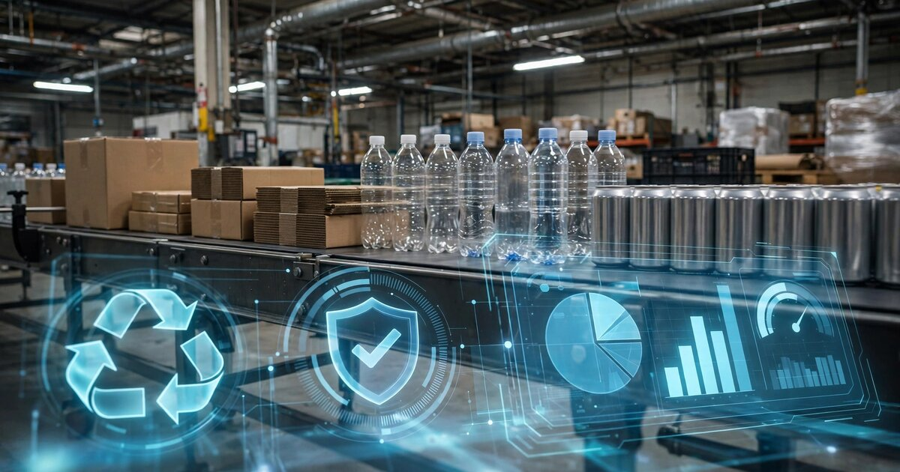

Packaging EPR Compliance SaaS for Mid-Market Brands
Seven US states have passed Extended Producer Responsibility laws for packaging since 2021. California's implementing regulations went live on May 1, 2026. Colorado is already invoicing producers at up to $1.60 per pound for rigid plastics. And the roughly 30,000 mid-market consumer brands shipping into those states have no software to manage any of it.

The Problem
A craft hot sauce company in Portland ships 200,000 bottles a year. Each bottle has a glass container, a plastic shrink-sleeve label, a polypropylene cap, and a corrugated shipper. Under Oregon's EPR law, which went into enforcement July 1, 2025, this company is a "producer" obligated to register with a Producer Responsibility Organization, report the weight and material composition of every packaging component by SKU, and pay fees that vary by material type and recyclability. Under Colorado's law, they owe separate fees on a different schedule. California's? A third set of rules, a third registration deadline, and civil penalties of up to $50,000 per day for non-compliance.
The hot sauce company doesn't know the weight of its shrink-sleeve labels, and neither does anyone else in the supply chain, because the contract packager prints them and the brand owner never asked, since nobody needed that data point before 2025. Multiply that ignorance across four packaging components, three states, and 47 SKUs, and you have a compliance problem that a spreadsheet cannot solve.
Now multiply that across the entire industry: there are roughly 30,000 consumer packaged goods companies in the United States, most of them mid-market brands with $5 million to $500 million in revenue. The seven states that have enacted EPR packaging laws (Maine, Oregon, Colorado, California, Minnesota, Maryland, and Washington) account for 21% of the US grocery market. Eight additional states introduced EPR packaging bills in 2025 alone. Add those states in, and the coverage jumps to 48% of US grocery sales. Every mid-market brand selling nationally is already exposed.
The Regulatory Avalanche
What makes packaging EPR different from other compliance burdens is the simultaneity. Seven state laws passed within four years, each with its own definitions, timelines, fee structures, and reporting formats. The deadlines are stacked on top of each other like geological strata, each layer adding pressure:
| State | Law | Key Deadline | Status |
|---|---|---|---|
| Oregon | SB 582 | Enforcement began Jul 1, 2025 | Invoicing producers now |
| Colorado | HB 22-1355 | PRO registration by Jul 1, 2025 | Fees due Jan 2026+ |
| California | SB 54 | Regs finalized May 1, 2026; PRO join by Jan 1, 2027 | Registration open now |
| Maine | LD 1541 | Registration + startup fees 2026 | Full implementation 2027 |
| Minnesota | HF 3577 | Limited registration 2025-2026 | PRO operations 2027-2028 |
| Maryland | SB 222 | PRO onboarding begins 2026 | Fees starting 2028 |
| Washington | Recycling Reform Act | PRO registration by Jul 1, 2026 | Plan implementation 2030 |
Circular Action Alliance (CAA), the nonprofit PRO founded by Amazon, Walmart, Coca-Cola, P&G, and 16 other industry heavyweights, now serves as the approved PRO in six of these seven states. Maine selected its own stewardship organization. But CAA's role is to collect fees and administer programs, not to function as a compliance software provider that helps brands catalog their packaging, calculate fee exposure, or generate the SKU-level material reports that each state's law requires.
The financial exposure compounds quickly. According to an AlixPartners analysis based on client experience, EPR fees will consume 1% to 2% of net sales across the grocery industry, ranging from 0.5% in meat to 6% in center store categories. Colorado's 2026 fee schedule confirms the signal: interim base dues reach $1.60 per pound for non-collected rigid plastics, while recyclable corrugated cardboard sits in the single digits per pound. The spread between a recyclable format and a non-collected one exceeds $1.50 per pound. For a brand shipping millions of units in flexible film pouches, that differential can mean six- or seven-figure annual fees per state.
The Gap in the Market
The large players have it handled: P&G, Nestlé, and Coca-Cola are CAA founding members with dedicated sustainability teams, packaging engineers, and law firms parsing every state's regulations, and they've been preparing since before the first bill was signed. The mid-market has been blindsided.
The existing solution market confirms how badly the middle is underserved:
| Company | What They Do | What's Missing |
|---|---|---|
| Assent + Lorax EPI | Enterprise supply chain compliance with supplier data collection and EPR reporting | Priced for manufacturers with $500M+ revenue and complex global supply chains. A craft beverage brand with 30 SKUs doesn't need (and can't afford) enterprise supplier engagement workflows. |
| Valpak / Comply Loop | Global EPR data management with 60M+ SKU database, UK-centric | Built for multinational compliance across EU PPWR and UK regulations, where US state-level EPR is a secondary market with no self-serve tier. |
| Source Intelligence + RecycleMe | Consulting + platform for 250+ global schemes | Advisory-first model. Useful for strategy, but brands need a tool they can run themselves week to week, not quarterly consulting engagements. |
| RLG (Reverse Logistics Group) | Global compliance and take-back logistics | Fortune 500 focus. Minimum engagement thresholds exclude brands with fewer than 500 SKUs. |
| CAA (Circular Action Alliance) | PRO: collects fees, administers programs | Not a software company. Handles registration and fee collection but doesn't help brands figure out what they owe or optimize packaging to reduce fees. |
The pattern is identical to veterinary insurance claims before clearinghouses existed, or construction stormwater permits before permit-tracking SaaS appeared. Enterprise solutions exist for the top 200 brands, and consulting firms will help anyone who can pay $50,000 per engagement, but the self-serve compliance layer for the brand doing $20 million in revenue with 80 SKUs across three EPR states doesn't exist. Every mid-market brand is currently solving this with a sustainability consultant, a legal memo, and an increasingly terrifying spreadsheet.
The Solution
A packaging EPR compliance platform with four layers:
1. SKU-level packaging cataloger: a guided intake flow where brands enter each product SKU, list its packaging components (primary container, closure, label, secondary packaging, shipper), and record material type, weight, and recyclability designation per component. For brands that don't know their component weights (most of them), the platform provides industry benchmarks by container format (a standard 12 oz glass bottle with metal lug cap weighs approximately 320g; a 16 oz PET bottle with HDPE cap weighs approximately 28g) and a verification workflow where brands can weigh samples with a postal scale and enter actuals. This data becomes the foundation for everything else.
2. Multi-state obligation engine: based on the brand's sales footprint (which states they ship into, through which channels), the platform determines which EPR laws apply, what registration deadlines are imminent, what reporting periods are open, and what data each state requires. This isn't a static checklist; it's a rules engine that updates as states finalize regulations, change deadlines, or add new requirements. California alone has seen three rounds of rulemaking revisions since SB 54 passed. The engine keeps brands current without requiring them to read regulatory dockets.
3. Fee estimator and eco-modulation optimizer: based on the brand's packaging catalog, the platform calculates estimated EPR fees per state, broken down by SKU and material. The key move: it models the savings from packaging switches: if a brand replaces a multi-layer flexible film pouch (Colorado fee: ~$0.70/lb) with a mono-material PE pouch that qualifies for a lower fee tier, the platform shows the fee reduction per unit, per state, per year. This turns a compliance cost into a packaging design decision tool, exactly the behavior EPR laws are designed to incentivize.
4. Report generator and filing tracker: each state and PRO requires reports in specific formats with specific data fields. The platform generates jurisdiction-ready outputs from the brand's packaging catalog (material weights by category, recycled content percentages, source reduction metrics) and tracks filing deadlines with automated reminders. When a brand files through the platform, it creates an audit trail that satisfies regulatory requirements and simplifies future reporting cycles.
Revenue Model
| Revenue Stream | Amount | Notes |
|---|---|---|
| Monthly SaaS per brand | $299-$1,499/mo | Tiered by SKU count and state count. Solo brand, one state, <50 SKUs: $299. Multi-brand portfolio across 5+ states: $1,499. |
| Fee optimization advisory | 10-15% of first-year savings | When eco-modulation analysis identifies a packaging switch that saves $40K/year in EPR fees, the platform charges $4K-$6K for the recommendation and implementation tracking. |
| PRO registration concierge | $500-$2,000 per state | One-time setup fee for brands that want the platform to handle their initial CAA registration, baseline data submission, and exemption applications. |
| Packaging data partnerships | $100-$500K/yr per partner | Aggregated, anonymized packaging composition data is valuable to material suppliers, recyclers, and PROs for fee modeling and infrastructure planning. |
Unit economics at $599/month average SaaS (estimated, not benchmarked): CAC via trade shows (Natural Products Expo, Pack Expo, Grocery Shop), CPG-focused LinkedIn campaigns, and partnerships with packaging distributors and co-packers who interact with mid-market brands daily. Estimated CAC: ~$1,800 (based on comparable B2B SaaS trade-show acquisition channels; actual costs will vary by channel mix). LTV at 36-month average retention (compliance SaaS is inherently sticky; cancellation means losing your data and audit trail, though no direct retention benchmark exists for this category): $21,564. LTV:CAC ratio of 12.0x. Gross margin estimate: 82% (typical for cloud-hosted SaaS with no physical delivery, but regulatory data maintenance costs could compress this to 70-75%).
Market Size
TAM: Approximately 30,000 consumer packaged goods companies in the US qualify as "producers" under at least one state's EPR law. Adding importers, private label retailers, and e-commerce sellers who are also classified as producers (because they are the "brand owner" or "first seller" of covered packaging) expands the universe, though precise counts are unavailable since most state registration databases are not public. Using the 30,000 CPG base conservatively: at an average of $599/month in SaaS plus $2,000 in first-year ancillary revenue, that's $599 × 12 × 30,000 + $2,000 × 30,000 = $276M/year. This figure grows with each new state that passes EPR legislation. Eight more states had active bills as of early 2026.
SAM: Brands currently selling into two or more EPR states with 50+ SKUs, the sweet spot where compliance is too complex for a spreadsheet but revenue doesn't justify a $100K/year enterprise platform. Conservatively 12,000 brands × $599/month × 12 = $86.3M.
SOM (year 3): 1,200 brands at $599/month average + ancillary revenue = ~$11M ARR. That's 10% penetration of the SAM, achievable through the trade show circuit and co-packer/distributor channel partnerships.
Why Now
California's clock started ticking on May 1, 2026. The Office of Administrative Law approved SB 54's implementing regulations, and producers had until June 1, 2026 to register with CAA or CalRecycle and submit 2023 baseline data. This isn't a future obligation. The compliance window is open right now, and brands that haven't started are already behind.
Colorado and Oregon are invoicing. These aren't theoretical fees. Colorado's 2026 dues schedule confirmed rates exceeding initial estimates for hard-to-recycle materials. Oregon started enforcement on July 1, 2025. Producers who haven't registered are selling illegally in those states. That's not a compliance risk — it's a sales ban.
Fee eco-modulation creates a financial incentive to switch, not just comply. Unlike most regulatory compliance (where you pay a flat cost and move on), EPR fees are explicitly designed to reward packaging redesign. The spread between recyclable and non-recyclable materials ($1.50+/lb in Colorado) means that the platform's packaging optimization recommendations pay for themselves. A $599/month SaaS that saves $30,000/year in fees is an easy sell.
The state cascade is accelerating. New York, Massachusetts, New Jersey, Illinois: all introduced packaging EPR bills in 2025. The states that have already passed laws account for 21% of US grocery sales. With pending legislation, coverage rises to 48%. Within five years, selling packaged goods in the United States without an EPR compliance system will be like operating a restaurant without food safety management: technically possible in some jurisdictions, but a competitive liability everywhere else.
Startup Costs
| Category | Cost | Notes |
|---|---|---|
| Engineering (3 developers, 8 months) | $480K | Rules engine, SKU cataloger, fee calculator, report generator. Regulatory data requires structured ingestion of state-specific definitions. |
| Regulatory data and legal review | $120K | Parsing 7 state statutes + implementing regulations + PRO program plans. Ongoing monitoring as rules change. Legal validation of compliance advice. |
| Packaging benchmark database | $60K | Compiling component weights by container format, material composition standards, recyclability designations by state. Sourced from industry data, ASTM standards, and direct measurement. |
| Trade show and channel marketing | $80K | Pack Expo (Nov 2026), Natural Products Expo West (Mar 2027), plus co-packer partnership development. |
| Operating buffer (8 months) | $60K | Infrastructure, tooling, insurance, miscellaneous. |
| Total | $800K |
Original Analysis: The Fee Asymmetry Creates a Product-Led Growth Loop
Here's what nobody in the EPR compliance conversation is saying: the eco-modulation fee structure creates a natural product-led growth dynamic that doesn't exist in other compliance SaaS categories.
In most compliance SaaS (elevator inspections, backflow testing, fire suppression), the software helps you avoid a penalty. The value is defensive: you pay $200/month so you don't get fined $5,000. The ROI is clear but capped. You can't optimize your way to lower compliance costs, because the inspection fee is the inspection fee.
EPR is structurally different. The fees are variable by material, and the spread is enormous. Colorado charges less than $0.10/lb for recyclable aluminum and corrugated, but $1.60/lb for non-collected rigid plastics. A brand shipping 100,000 units in non-recyclable rigid plastic clamshells (average weight: 0.15 lb) pays $24,000/year in Colorado EPR fees alone. Switch to recyclable PET thermoforms? That drops to roughly $2,250. One material change, one state, $21,750 in annual savings.
This means the compliance platform isn't just a cost center. It's a profit center. Every packaging switch it recommends generates measurable savings that the brand can attribute directly to the platform. That savings story is the sales pitch for the next prospect, the case study for the trade show booth, and the reason retention stays high. The software literally pays for itself, which is the strongest possible product-led growth signal.
No other compliance SaaS category we've analyzed has this structural advantage. It's a function of eco-modulation (the policy design where fees reward better materials), and it doesn't exist in flat-fee regulatory regimes.
Risks and Challenges
CAA could build this themselves. As the approved PRO in six states, CAA has the regulatory relationships and producer data to create a compliance dashboard, which would instantly undercut any third-party tool. Mitigation: CAA is a fee collection and program administration nonprofit, not a software company. Its founding members (Walmart, P&G, Coca-Cola) have internal teams and don't need a self-serve tool. CAA's incentive is to maximize compliance rates, and a third-party platform that drives mid-market registration actually serves CAA's mission. Position as a channel partner, not a competitor.
State-level fragmentation could consolidate into federal law. A federal EPR framework would simplify multi-state compliance and potentially reduce the need for jurisdiction-level tracking. Mitigation: Congress has shown zero appetite for federal packaging EPR. The Republican attorneys general coalition that sent letters to CAA in October 2025 signals political opposition at the federal level. State-by-state fragmentation is the durable reality, and fragmentation is what creates the product's value.
Accuracy liability. If the platform's fee calculations are wrong, brands could underpay their PRO and face penalties, a risk that compounds across multiple jurisdictions where a single material classification error propagates to every state report. Mitigation: disclaimers are table stakes, but the real answer is conservative estimation with audit-trail transparency. Show the brand exactly which regulation produced each calculation and what inputs drove it. When a state changes a rule mid-cycle (California has done this twice), propagate updates with change logs so brands can verify against the source text themselves.
Enterprise players could move downmarket. Assent, Valpak, or Source Intelligence could launch a self-serve tier for mid-market brands, and their existing regulatory databases would give them a head start. Mitigation: enterprise compliance vendors almost never successfully serve SMBs, because the sales motion, support model, and pricing psychology are completely different. Salesforce didn't kill Mailchimp; Oracle didn't kill QuickBooks. The mid-market SaaS playbook is a distinct competency that enterprise incumbents consistently fail to execute.
Strongest Counterargument
The most serious objection: mid-market CPG brands might just eat the fees as a cost of doing business rather than invest in compliance optimization. If EPR fees truly consume only 1-2% of net sales, many brands will treat them like credit card processing fees: annoying, unavoidable, not worth engineering around. In that scenario, the compliance platform becomes a $299/month reporting tool rather than a high-value optimization engine, and the unit economics degrade significantly.
This is plausible, especially for brands in categories where the fee burden is low (meat, dairy, where packaging tends to be recyclable). But the AlixPartners data shows the pain isn't uniform: center store categories face fees up to 6% of net sales. For a $15 million hot sauce brand, 6% is $900,000 in annual EPR fees. That's not a rounding error. And the brands most exposed (those using flexible films, multi-material pouches, polystyrene) are precisely the ones where material switches offer the largest fee reductions and the platform delivers the most value.
Limitations
This analysis relies on publicly available fee schedules from Colorado and Oregon, plus AlixPartners' stated estimates from client experience. California's final fee rates won't be published until October 2026, and CAA's "illustrative fees" are explicitly described as non-binding. If California's actual rates land significantly below Colorado's, the fee optimization value proposition weakens proportionally. We also assume the 30,000 CPG company figure includes brands that are below state registration thresholds; some states exempt producers under certain revenue or tonnage floors. The actual obligated universe is likely smaller, but precise counts aren't available because most states' registration databases are not public as of July 2026.
The Bottom Line
Extended Producer Responsibility for packaging has arrived in the United States — not as a concept, but as an operational reality with active fee schedules, registration deadlines, and sales bans for non-compliance. The Fortune 500 saw it coming and built CAA to manage it. Mid-market brands got a regulatory memo and a deadline. The company that builds the TurboTax for packaging EPR — self-serve, SKU-level, multi-state, with a fee optimization engine that pays for itself through eco-modulation savings — will own the compliance layer for tens of thousands of brands navigating the most significant packaging regulation in US history. The window is narrow, and it's open right now.
What You Can Do
If you're a CPG brand selling into Oregon, Colorado, or California, determine your "producer" status under each state's law immediately. CAA's website has registration guidance. If you haven't registered in states where deadlines have passed, you are already non-compliant.
Weigh your packaging components, literally, with a $30 postal scale. Fifteen minutes per SKU gives you the material data you'll need for every EPR report across every state, and cataloging it now before the reporting windows close is the single highest-ROI hour you'll spend on compliance this quarter.
If you're a packaging engineer, co-packer, or contract manufacturer who works with mid-market brands: your clients need this data, and you're the one who has it. The business that helps its clients comply will retain those clients when competitors can't.
If you're building this company, start with Oregon and Colorado; they're already invoicing, so the pain is immediate and the sales cycle is short. California adds urgency. The platform should be live before October 2026, when CAA publishes final California fee rates and every brand in the state scrambles to understand what they owe.